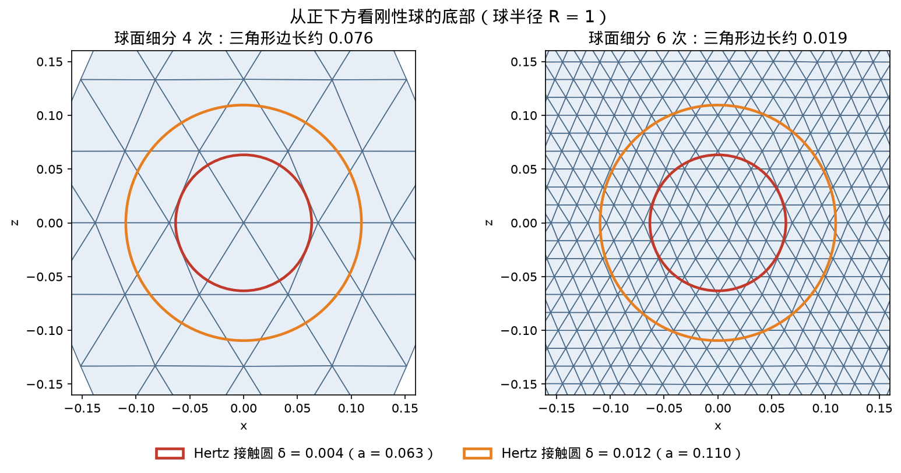

造训练数据（label）的收敛检查
supervisor 造 label 用的 Hertz 算例原样照搬：一个刚性球（半径 1）竖直压进一块底面固定的软块（宽 2.4、高 1.2，E = 1e5，ν = 0.3），无摩擦、无重力，每个压深静置到平衡后算块里存的弹性能 U，这就是训练网络用的 label。和 Hertz 解析解 U_Hertz = (8/15)·E*·√R·δ^2.5 比（变形小时它是精确的；压得深时它自己的小变形、抛物面近似也有误差）。压深照 supervisor 的 6 个，另外逐样改下表里的设置，看 label 会不会变。
| 改什么 | 取值 | 直观上是什么 |
|---|
| 压深 δ | 0.004 – 0.024（6 个） | 球最低点压到块顶以下多深；supervisor 的主扫描 |
| \(\hat d\) | 1e-3（supervisor）、5e-4、2.5e-4 | barrier 开始推的距离：两表面离得比 \(\hat d\) 近就开始互相推 |
| 接触区网格尺寸 h_c | 0.025（supervisor）、0.0125、0.00625 | 块在接触区的四面体大小；最细一档 265 万个四面体 |
| 球面细分次数 | 4（supervisor）、6、7 | 球面三角形的大小；次数每加 1，边长减半 |
| 接触模型 | al-ipc（supervisor）、原版 IPC | al-ipc 不用 barrier、用增广拉格朗日防穿透 |
| 块的半宽 = 深度 L | 1.2（supervisor）、2.4、4.8 | 块越大越接近 Hertz 假设的无限大半空间 |
| 细网格区外的单元放大倍数 | 1.4（supervisor）、1.2 | 越接近 1，远处的网格越细 |
| 材料参数 | 照原样传入（supervisor）、直写属性 | 见下面「材料参数」一段 |
| label 怎么算 | 小应变线弹性公式（supervisor 的球压脚本）、SNK1 公式 | SNK1 = 我们这版求解器真正在最小化的能量 |
按原理期待：如果 label 是对的，这些设置都加密、放大以后，U ÷ U_Hertz 应该不再变化，而且接近 1。

从正下方看刚性球的底部：supervisor 的球面细分 4 次时，压深 0.004 的接触圆里只有一圈三角形 块的弹性能 ÷ Hertz 能量，随 \(\hat d\)（横轴）和网格（颜色）的变化；实线 = 压深 0.004，虚线 = 压深 0.024；纵轴 1 = 与解析解一致
块的弹性能 ÷ Hertz 能量，随 \(\hat d\)（横轴）和网格（颜色）的变化；实线 = 压深 0.004，虚线 = 压深 0.024；纵轴 1 = 与解析解一致
| 球面细分次数 | 压深 0.004 的 U ÷ U_Hertz | 压深 0.012 的 U ÷ U_Hertz |
|---|
| 4 | 0.789 | 1.028 |
| 6 | 1.219 | 1.177 |
| 7 | 1.237 | 1.184 |
| 块的半宽 L（网格 0.0125、球面细分 7、原版 IPC） | \(\hat d\) 档数 | 外推到 \(\hat d\) = 0：压深 0.004 | 压深 0.024 |
|---|
| 1.2（supervisor 的块） | 4 | 1.127 | 1.193 |
| 2.4 | 3 | 1.105 | 1.137 |
| 2.4，远处网格放大倍数 1.2 | 2 | 1.096 | 1.130 |
| 4.8 | 3 | 1.097 | 1.111 |
| 4.8，材料参数直写 | 3 | 1.063 | 1.067 |
| 4.8，材料参数直写，label 按 SNK1 算 | 3 | 1.054 | 1.042 |
| 2.4，材料参数直写，label 按 SNK1 算 | 3 | 1.060 | 1.066 |
| 4.8，网格 0.00625，材料参数直写，label 按 SNK1 算 | 2 | 1.027 | 1.035 |
- 球面细分 4 → 6 → 7 次（网格 0.0125、\(\hat d\) 2.5e-4、原版 IPC），压深 0.004 的比值 0.79 → 1.22 → 1.24：细分 4 次时反常地低于 Hertz，6 → 7 只差 1.5%
- \(\hat d\) 1e-3 → 5e-4 → 2.5e-4（最细网格、原版 IPC），压深 0.004 的比值 1.81 → 1.41 → 1.22，压深 0.024 的比值 1.30 → 1.24 → 1.20：\(\hat d\) 每减半，多出来的部分大约减半
- 网格 0.025 → 0.0125 → 0.00625（\(\hat d\) 2.5e-4），压深 0.004 的比值 1.32 → 1.24 → 1.22：网格的影响比 \(\hat d\) 小得多
- 原版 IPC 和 al-ipc 在同网格同 \(\hat d\) 下几乎一样（压深 0.004：\(\hat d\) 1e-3 时 1.81 对 1.82，\(\hat d\) 2.5e-4 时 1.22 对 1.27），但最细网格上 al-ipc 慢约 3.7 倍
- 照 supervisor 的设置（al-ipc、网格 0.025、\(\hat d\) 1e-3、球面细分 4）复现出压深 0.004 的比值 1.46（supervisor 记录 1.42）；只把球面换成细分 7 次，变成 2.00
- 把最细网格的结果按 \(\hat d\) 线性外推到 0：压深 0.004 约 1.03，压深 0.024 约 1.17
- 块半宽 1.2 → 2.4 → 4.8（外推到 \(\hat d\) = 0，压深 0.024）：1.19 → 1.14 → 1.11；远处网格加细只差 0.008（两者都用 \(\hat d\) 5e-4、2.5e-4 外推）；材料参数直写后 1.11 → 1.07，label 再按 SNK1 算 → 1.04
- label 按 SNK1 算、外推到 \(\hat d\) = 0 后再拆（都是两点估算）：块按 1/L 外推到无限大，压深 0.004 / 0.024 为 1.049 / 1.019；块半宽 4.8 时网格从 0.0125 加密到 0.00625，1.054 → 1.027 / 1.042 → 1.035，按误差和网格尺寸成正比外推到网格 0：1.000 / 1.029
- 最细网格上球面再从细分 7 次加到 8 次（\(\hat d\) 2.5e-4、SNK1 label）：压深 0.004 / 0.024 只变 +0.6% / +0.1%，球面已不是误差来源
- 细长棒单轴拉伸实测（设定 E = 1e5、ν = 0.3）：照原样传入 E = 124489、ν = 0.214；直写属性后 E = 99931、ν = 0.300
结论：label 目前主要被 \(\hat d\) 拉高：supervisor 用的 \(\hat d\) = 1e-3 在小压深下多算了约 80% 的能量；球面太粗又把它压低了一部分，两者恰好抵消成看起来还行的 1.4。按 \(\hat d\) 外推到 0 以后剩下的偏高，来自块不够大、libuipc 新版的材料参数错配和网格分辨率：参数改对、label 按 SNK1 算以后，小压深再把网格加密就回到 Hertz（外推约 1.00–1.02），大压深再把块按 1/L 外推到无限大还剩约 2%，推测来自 Hertz 公式自身的近似（压深 0.024 时接触半径约 0.155，(a/R)² ≈ 2.4%），正在用不经过 IPC 的独立有限元验证。supervisor 之前「label 接近 Hertz」的结论是两个误差抵消的结果，不能再引用。造数据要用细分 ≥ 7 次的球、接触区网格足够细（压深 0.004 时 0.0125 还不够）、尽量小的 \(\hat d\)（至少三档、确认和 \(\hat d\) 成正比后外推到 0）、足够大的块，并在新版 libuipc 上直写材料参数、按 SNK1 算 label。
为什么 \(\hat d\) 会把能量拉高：barrier 在两表面还隔着不到 \(\hat d\) 时就开始推，所以球还没真正碰到，块就已经在比真实接触圈更大的一片区域上被压下去，存的能量更多。这部分多出来的能量大致和 \(\hat d\) ÷ δ 成正比，所以压得越浅越严重。把实测间隙从压深里扣掉补不回来：扣了以后比值反而更偏离 1。
为什么球面粗会把能量压低：细分 4 次时三角形边长约 0.076，比压深 0.004 时的 Hertz 接触半径 0.063 还大，球底在这个尺度上是个多面体的尖顶，不是光滑球面，接触区的形状和受力都不对。
材料参数：libuipc 的 StableNeoHookean 先把输入的 E、ν 按原版 Stable Neo-Hookean 能量需要的公式换算（让它在小变形下正好等于输入值），可是 2026-08-23 起它的 GPU 端换成了另一种能量（Stiff-GIPC 的 SNK1），换算没跟着改。拉一根细长棒实测（已知拉力 ÷ 量到的伸长，不靠任何能量公式）证实了这一点。supervisor 用的 pyuipc 0.0.25 早于这次改动，不受影响；我们源码编译的版本和 Genesis 的 IPC 软体都受影响。「直写属性」= 换算之后再把块上的参数直接改成 SNK1 需要的值，实测 E、ν 回到设定值。
label 为什么要按 SNK1 算：求解器求的是让 SNK1 能量最小的形状；如果 label 用别的公式在这个形状上算能量，它就不是任何一个材料模型的最小能量，大变形时连力（能量的梯度）都对不上。
\(\hat d\) 外推要至少三档：块半宽 2.4、4.8 时 \(\hat d\) 每减半多出的部分缩小到约 0.46–0.51 倍，和 \(\hat d\) 成正比，外推可靠；半宽 1.2 时从 5e-4 减到 2.5e-4 只缩小到约 0.26–0.30 倍，再往下（1.25e-4、6.25e-5）又恢复到约 0.5 倍：只有最大那档 \(\hat d\) 偏离正比，用最小两档外推不受影响。之前只用 5e-4、2.5e-4 两档外推，半宽 1.2 的小压深值（1.05）偏低，造成「块越大反而越高」的假象；改用最小两档后单调了。
剩下的偏差怎么拆：小压深时块从半宽 2.4 放到 4.8 只降 0.006，块尺寸不是主因；把网格从 0.0125 加密到 0.00625就降了 2.7 个百分点（压深 0.004 时接触半径约 0.063，0.0125 的网格只横跨 5 个单元）。大压深时网格只差 0.7 个百分点，块尺寸占大头。两个外推都只用两个点，假设误差分别和 1/L、网格尺寸成正比；若网格误差按尺寸的平方减小，小压深外推值约 1.018。
上周：盒子实验与 IPC 参数扫描
Genesis 没有「一堆物体扔进盒子」的官方例子，这里用官方 ipc_objects_falling 场景加一个盒子和更多同款物体。这一套：所有软球 E = 1e5 Pa（官方 1e3 太软，在盒子里会被压塌）。所有实验每次只改一个参数。盒子墙画成半透明，盒内物体不透明。除了一开始就穿插的两档（开跑前被拒），所有档位 libuipc 的穿透检查都没有报穿透。
IPC 的接触能量与 κ 区间（下面各实验都用）
原版 IPC 论文：每一对距离小于 \(\hat d\) 的接触（点–三角形、边–边）加一项 barrier 能量，距离越近能量越大，距离为 0 时无穷大——这堵「无穷高的墙」保证永远穿不过去：\[ b(d)=\begin{cases}-(d-\hat d)^2\ln\dfrac{d}{\hat d}, & 0<d<\hat d\\[2pt] 0, & d\ge\hat d\end{cases}\qquad E_{\text{contact}}=\kappa\sum_{k\in C} b(d_k) \]
libuipc 实际用的：换成按距离平方 \(D=d^2\) 写的 log² 形式（同样 \(D\to0\) 时无穷大、\(D\ge\hat d^{2}\) 时为 0），并且整个能量乘了 \(\Delta t^2\)：\[ B(D)=\kappa\,\Delta t^{2}\,(D-\hat d^{2})^{2}\Big[\ln\frac{D}{\hat d^{2}}\Big]^{2},\qquad 0<D<\hat d^{2} \]
Genesis：自己不算 barrier。它把每个物体的 contact_resistance 当作 κ，两个物体之间取调和平均\(\kappa_{ij}=\dfrac{2\,r_i r_j}{r_i+r_j}\)，交给 libuipc；libuipc 再把它夹进按场景算出的区间：\[ \kappa_{\min}\approx\frac{10^{11}\,s\,L^{2}\,\bar m}{4\,\hat d^{4}\,\Delta t^{2}},\qquad \kappa_{\max}=100\,\kappa_{\min} \]直观上：每个顶点的惯性刚度是 \(\bar m/\Delta t^{2}\)，barrier 必须比它硬才能在一步内挡住物体，所以 \(\bar m\) 越大 → κ 越大，\(\Delta t\)、\(\hat d\) 越小 → κ 急剧变大。
| 符号 | 含义 | 本场景（官方默认） |
|---|
| \(d\) | 一对接触图元（点–三角形 / 边–边）之间的距离 | — |
| \(D=d^2\) | 距离的平方（libuipc 用它算 barrier） | — |
| \(\hat d\) | barrier 开始起作用的距离 | 10 mm |
| \(\kappa\) | barrier 的刚度 | 设 1e9 Pa，实际被夹到 1.57e7 Pa |
| \(C\)，\(k\) | 所有距离小于 \(\hat d\) 的接触对，\(k\) 是其中一对 | — |
| \(b(d)\)，\(B(D)\) | 一对接触的 barrier 能量（论文 / libuipc） | — |
| \(\Delta t\) | 时间步长 | 0.02 s |
| \(r_i\) | 物体 \(i\) 的 contact_resistance | 1e9 Pa |
| \(s\) | libuipc 的缩放系数 kappa_eval_scale | 1e-16 |
| \(L\) | 整个场景包围盒的对角线长度 | 3.69 m |
| \(\bar m\) | 全场景所有顶点的平均质量 | 0.0184 kg |
| \(\kappa_{\min}\)，\(\kappa_{\max}\) | libuipc 允许的 κ 下限 / 上限 | 1.57e5 / 1.57e7 Pa |
官方参数：一堆物体扔进盒子
按原理期待：物体落下、互相碰撞后堆在盒子里。IPC 的 barrier 让任意两个表面之间始终留着一点小于 \(\hat d\) 的间隙，所以全程不该有穿透。
对照档：下面各节要扫的参数在这里都取官方本例的值和 Genesis 默认（软球 E 是否改过见下一句）。（dt = 0.02 s、\(\hat d\) = 1 cm、κ = 1e9 Pa、μ = 0.1、软球用官方 Sphere 网格、软球 E = 1e5 Pa（官方是 1e3））。看：停住时每一对接触面（球–地、球–布、布–方块……）之间的最短距离，每帧 Newton 迭代几次（好不好解）。
| 配置 | 软球–布 间隙（mm） | 软球–地面 间隙（mm） | 方块–布 间隙（mm） | 方块–地面 间隙（mm） | 布–地面 间隙（mm） | Newton 次数（中位 / 最多） |
|---|
| 官方默认参数 | 9.85 | 8.47–8.63 | 9.64 | 7.32–7.87 | 9.73 | 6 / 7 |
- 每一对接触面停住时 → 间隙 0.73–0.99 倍 \(\hat d\)，不贴死
- 接触越重 → 间隙越小（方块–地面 0.8 倍 \(\hat d\) < 软球–地面 0.85 < 布–地面 0.97）
结论：与期待一致：全程没有穿透；停住时每一对接触面（不只是和地面，也包括球–布、布–方块）之间都留着一条0.7–1 倍 \(\hat d\) 的缝，物体停在 barrier 起作用的那一层里。越重的接触缝越小：方块压地约 0.8 \(\hat d\)，软球约 0.85 \(\hat d\)，很轻的布只陷到约 0.97 \(\hat d\)——barrier 的推力随间隙变小急剧增大，越重越要陷得深才托得住。
\(\hat d\)（barrier 作用距离）
按原理期待：\(\hat d\) 是 barrier 开始起作用的距离。\(\hat d\) 变小，停住时每一对接触面之间的间隙跟着变小；\(\kappa_{\min}\propto 1/\hat d^{4}\)（见本节开头的式子），接触更硬，Newton 迭代一般会变多；\(\hat d\) 变大，物体隔得更远就被推开。不论 \(\hat d\) 取多少，都不该出现穿透。
改 contact_d_hat。官方本例取 1 cm，Genesis 注释说应按网格分辨率取。取值：2、5、15、30；其余参数保持官方默认（dt = 0.02 s、\(\hat d\) = 1 cm、κ = 1e9 Pa、μ = 0.1、软球用官方 Sphere 网格、软球 E = 1e5 Pa（官方是 1e3）），表里也放了官方默认那一档对照。看：每一对接触面之间的最短距离（是否跟着 \(\hat d\) 变）、每帧 Newton 迭代几次、软球表面边长（球有没有被自接触撑开）。
| \(\hat d\)（mm） | 软球–方块 间隙（mm） | 软球–布 间隙（mm） | 软球–地面 间隙（mm） | 方块–布 间隙（mm） | 方块–地面 间隙（mm） | 布–墙 间隙（mm） | 布–地面 间隙（mm） | Newton 次数（中位 / 最多） | 软球表面边长（mm，静止 12.1） |
|---|
| 2 | — | — | 1.6–1.65 | — | 1.31–1.47 | — | — | 7 / 11 | 11.7–12 |
| 5 | — | — | 4.37–4.44 | — | 4.09–4.13 | — | — | 7 / 9 | 11.8–12 |
| 10（官方默认） | — | 9.85 | 8.47–8.63 | 9.64 | 7.32–7.87 | — | 9.73 | 6 / 7 | 11.9–12.1 |
| 15 | — | 12.1–13.4 | 11.3 | 11.9–14.4 | 8.66–11.4 | 14.9 | — | 6 / 8 | 14.7–15.3 |
| 30 | 27.7 | 23.5–25.2 | 19.8–20.3 | 26.4–26.7 | 20–20.8 | 28.6 | 21.2 | 7 / 7 | 25.5–26 |
- \(\hat d\) ↓ → 间隙 ↓（始终约 0.6–1 倍 \(\hat d\)）
- \(\hat d\) ↓ → Newton 次数 ↑（每帧最多：10 mm 7 次 → 5 mm 9 次 → 2 mm 11 次）
- \(\hat d\) > 软球表面边长（约 12 mm）→ 球被自接触撑开（边长被撑到约 \(\hat d\)：15 mm 时 15 mm，30 mm 时 26 mm）
结论：与期待一致：所有接触的间隙都跟着 \(\hat d\) 走（始终约 0.6–1 倍 \(\hat d\)），\(\hat d\) 越小物体靠得越近，但每帧 Newton 迭代越多（越难解）。\(\hat d\) 不能大于软体表面网格的边长（这个软球静止时约 12 mm）：IPC 的 barrier 也作用在同一个球自己的不相邻面片之间，\(\hat d\) 一旦超过边长，球就被自己从里面撑开，边被撑到和 \(\hat d\) 差不多长才停——15 mm 时边长变成约 15 mm、球明显变形，30 mm 时边长约 26 mm、球完全变形；2、5、10 mm 时边长不变。
时间步长 dt
按原理期待：dt 变小，每一步物体移动得更少；但 \(\kappa_{\min}\propto 1/\Delta t^{2}\)（见本节开头的式子，dt 缩小 10 倍、κ 区间抬高 100 倍），所以每步的 Newton 次数不一定减少，总步数则成倍增加。不论 dt 多大都不该穿透。
改 SimOptions.dt。官方本例 0.02 s；物理时长固定 2 s，帧数随 dt 变。取值：0.002、0.005、0.01、0.04；其余参数保持官方默认（dt = 0.02 s、\(\hat d\) = 1 cm、κ = 1e9 Pa、μ = 0.1、软球用官方 Sphere 网格、软球 E = 1e5 Pa（官方是 1e3）），表里也放了官方默认那一档对照。看：每帧 Newton 迭代几次、总耗时，以及停住时各接触面之间的间隙（接触变硬没有）。
| dt（s） | 软球–布 间隙（mm） | 软球–地面 间隙（mm） | 方块–布 间隙（mm） | 方块–地面 间隙（mm） | 布–地面 间隙（mm） | Newton 次数（中位 / 最多） | 仿真总耗时（s） |
|---|
| 0.002 | — | 9.63 | — | 9.45–9.46 | — | 7 / 7 | 152 |
| 0.005 | — | 9.33–9.45 | — | 8.99–9.15 | — | 7 / 7 | 61.5 |
| 0.01 | — | 8.91–9.1 | — | 8.6–8.65 | — | 6 / 7 | 42.6 |
| 0.02（官方默认） | 9.85 | 8.47–8.63 | 9.64 | 7.32–7.87 | 9.73 | 6 / 7 | 27.6 |
| 0.04 | 8.66–9.1 | 7.57 | 9.19–9.24 | 6.65 | 7.69 | 7 / 7 | 15.9 |
- dt ↓ → κ 下限 ↑ → 接触更硬 → 间隙更接近 \(\hat d\)（0.04 s 时 6.7–9.2 mm → 0.002 s 时 9.4–9.6 mm）
- dt ↓ → 总步数 ↑ → 耗时 ↑（0.04 s 16 s → 0.002 s 152 s），每帧 Newton 次数基本不变
结论：与期待一致：每帧迭代次数基本不随 dt 变，总耗时随步数成倍增加；dt 越小，接触间隙越接近 \(\hat d\)（libuipc 的 \(\kappa_{\min}\propto 1/\Delta t^{2}\)，接触更硬、物体陷得更浅）。
接触刚度 κ
按原理期待：κ 是 barrier 的刚度（式子见本节开头）。libuipc 会把它夹进区间 \([\kappa_{\min},\kappa_{\max}]\)：在区间内，κ 越大 barrier 这堵墙越陡，物体陷进 barrier 越浅，间隙越接近 \(\hat d\)；区间外的值会被夹到边界，结果应该和边界值一样。
本场景代入得 \([1.57\times10^{5},\,1.57\times10^{7}]\) Pa，和日志打印的一致。
改 Genesis 的 contact_resistance，默认 1e9 Pa。取值：1e4、2e5、1e6、3e6、1e7；其余参数保持官方默认（dt = 0.02 s、\(\hat d\) = 1 cm、κ = 1e9 Pa、μ = 0.1、软球用官方 Sphere 网格、软球 E = 1e5 Pa（官方是 1e3）），表里也放了官方默认那一档对照。看：每一对接触面之间的最短距离：刚度真的变了，间隙就该跟着变。
| 设的 κ（Pa） | libuipc 实际用的 κ（Pa） | 被夹 | 软球–方块 间隙（mm） | 软球–布 间隙（mm） | 软球–地面 间隙（mm） | 方块–布 间隙（mm） | 方块–地面 间隙（mm） | 布–墙 间隙（mm） | 布–地面 间隙（mm） |
|---|
| 1e4 | 1.57e5 | 夹到下限 | 5.14 | 6.66 | 4.1–4.57 | 5.34–6.44 | 1.59–3.11 | — | 4.78 |
| 2e5 | 2e5 | 否 | 5.32 | 6.7 | 4.56–4.94 | 6.61 | 2.36–2.42 | 8.97 | 5.11 |
| 1e6 | 1e6 | 否 | — | 8.27 | 6.52–6.84 | 8.02 | 4.89–4.89 | — | 7.53 |
| 3e6 | 3e6 | 否 | — | 9.02 | 7.44–7.73 | 9.12 | 6.36–6.36 | — | 8.56 |
| 1e7 | 1e7 | 否 | — | 9.4 | 8.22–8.42 | 8.71 | 7.53–7.65 | — | 9 |
| 1e9（官方默认） | 1.57e7 | 夹到上限 | — | 9.85 | 8.47–8.63 | 9.64 | 7.32–7.87 | — | 9.73 |
- 区间内 κ ↑ → 接触更硬 → 间隙 ↑（软球–地面：2e5 时 4.6 mm → 1e7 时 8.2 mm）
- κ 在区间外 → 被夹到边界 → 结果不再变（1e4 ≈ 2e5，默认 1e9 ≈ 1e7）
结论：与期待一致：libuipc 只认这个场景允许的区间 [1.57e5, 1.57e7] Pa。区间内（2e5 → 1e6 → 3e6 → 1e7）κ 越大接触越硬、物体陷得越浅，各接触面的间隙一路变大（软球–地面 4.6 → 6.5 → 7.4 → 8.2 mm，\(\hat d\) = 10 mm）；区间外被夹到边界：1e4 被夹到下限、结果和 2e5 差不多，默认 1e9 被夹到上限、结果和 1e7 差不多。所以在 Genesis 里设 contact_resistance 只有落在这个区间里才有用。
初始穿插
按原理期待：IPC 的 barrier 只在两个表面距离为正时才有定义，一开始就穿插的话能量没有意义，所以 libuipc 的初始化检查应该直接拒绝开跑。
多放一个软球，让它和官方软球一开始就互相穿进去一部分（R 为球半径）。取值：两个软球互相穿进 0.5 R；其余参数保持官方默认（dt = 0.02 s、\(\hat d\) = 1 cm、κ = 1e9 Pa、μ = 0.1、软球用官方 Sphere 网格、软球 E = 1e5 Pa（官方是 1e3）），表里也放了官方默认那一档对照。看：libuipc 开跑前检查的日志原文。
两个软球互相穿进 0.5 R：开跑前就被拒，没有视频。上面是这个初始状态（同一场景只关掉开跑前的相交检查、只渲染第 0 帧，侧面看两个软球；球心相距 2R 减去穿插量，不穿插时至少 2R），下面是被拒那次的日志原文摘录。

[2026-10-02 12:55:45.845] [error] Intersection detected between Edge(933,941) in Geometry(1) Instance(1) Object[1] and Triangle(3063,3321,3329) in Geometry(5) Instance(5) Object[5], SelfColl(1,1)
[2026-10-02 12:55:45.845] [error] Intersection detected between Edge(933,941) in Geometry(1) Instance(1) Object[1] and Triangle(3321,3327,3329) in Geometry(5) Instance(5) Object[5], SelfColl(1,1)
[2026-10-02 12:55:45.845] [error] Intersection detected between Edge(976,979) in Geometry(1) Instance(1) Object[1] and Triangle(3341,3364,3367) in Geometry(5) Instance(5) Object[5], SelfColl(1,1)
[2026-10-02 12:55:45.851] [error] [uipc::backend::cuda::SimplicialSurfaceIntersectionCheck(1)]:
Geometry(1) in Object[fem_1_0(1)] intersects with Geometry(5) in Object[fem_5_0(5)]
Intersected mesh has 118 vertices, 108 edges, and 104 triangles.
Intersected mesh is saved at /nas/xiaoyingwang/Neural-IPC/outputs/ipc_sweep/genesis_stiffball/init_penetration/genesis_ipc_fd998d5-aa30349228c28187f8f9cad34/sanity_check/1/intersected_mesh.obj.
Create mesh [intersected_mesh<SimplicialComplex>] for post-processing.
Geometries:
- intersected_mesh: <SimplicialComplex>
[2026-10-02 12:55:45.851] [error] World is not valid, skipping init.
[2026-10-02 12:55:45.851] [error] World is not valid, skipping dump.
[Genesis] [12:55:45] [INFO] IPC world initialized successfully
AttributeError: 'NoneType' object has no attribute 'body_count'
| 日志里的句子 | 是什么意思 |
|---|
| Intersection detected between Edge(a,b) … and Triangle(c,d,e) … | 开跑前检查发现一个球表面的边穿过了另一个球表面的三角形，即两球一开始就互相穿进去了。 |
| World is not valid, skipping init. | libuipc 因此拒绝初始化，仿真不开跑。 |
关掉开跑前的相交检查（sanity_check_enable = false）硬跑：同一场景、同样的穿插，跑满 2 s。两个半径 80 mm 的球不穿插时球心至少相距 160 mm。
| 帧 | 1 | 5 | 10 | 25 | 50 | 100 |
|---|
| 两球球心距离（mm） | 120 | 136 | 123 | 122 | 123 | 122 |
- 一开始就穿插 → libuipc 开跑前的检查报相交 → 拒绝开跑
- 关掉检查硬跑 → 能跑完、不报错，但两个球一直嵌在一起（球心距离始终约 120–136 mm，不穿插至少要 160 mm）
结论：与期待一致：一开始就穿插时 libuipc 直接拒绝开跑。即使关掉检查硬跑，IPC 也分不开已经穿进去的两个物体：barrier 和 CCD 只能阻止「没穿 → 穿进去」，管不了一开始就穿着的部分，结果两个球一直粘在一起、互相挤变形——程序不报错但物理上是错的。所以 IPC 必须从无穿透的状态开始。
网格分辨率
按原理期待：网格越细，球面越接近真球，接触时参与的顶点越多，每步要解的未知数越多、越慢。只要初始无穿插，网格粗细都不该影响会不会穿透，物体落地后的大致位置应该接近。
官方 Sphere 本身就是表面细分 3 次的 icosphere；把软球换成同样大小、表面细分 2 / 3 / 4 次的 icosphere，由 Genesis 自己四面体化。取值：粗：icosphere 细分 2 次（表面 162 个顶点）、中：icosphere 细分 3 次（表面 642 个顶点）、细：icosphere 细分 4 次（表面 2562 个顶点）；其余参数保持官方默认（dt = 0.02 s、\(\hat d\) = 1 cm、κ = 1e9 Pa、μ = 0.1、软球用官方 Sphere 网格、软球 E = 1e5 Pa（官方是 1e3）），表里也放了官方默认那一档对照。看：libuipc 实际用的 κ（日志原文）、停住时各接触面之间的间隙、总耗时。
粗：icosphere 细分 2 次（表面 162 个顶点）
官方 Sphere（官方默认）：icosphere 细分 3 次（表面 642 个顶点）
中：icosphere 细分 3 次（表面 642 个顶点）
细：icosphere 细分 4 次（表面 2562 个顶点）
| 软球网格 | libuipc 实际用的 κ（Pa） | 被夹 | 软球–方块 间隙（mm） | 软球–布 间隙（mm） | 软球–地面 间隙（mm） | 方块–布 间隙（mm） | 方块–地面 间隙（mm） | 布–墙 间隙（mm） | 布–地面 间隙（mm） | 仿真总耗时（s） |
|---|
| 粗：icosphere 细分 2 次（表面 162 个顶点） | 4.93e7 | 夹到上限 | 9.19 | — | 8.38–8.72 | 9.78 | 8.13–8.51 | — | — | 12.1 |
| 官方 Sphere（官方默认）：icosphere 细分 3 次（表面 642 个顶点） | 1.57e7 | 夹到上限 | — | 9.85 | 8.47–8.63 | 9.64 | 7.32–7.87 | — | 9.73 | 27.6 |
| 中：icosphere 细分 3 次（表面 642 个顶点） | 1.43e7 | 夹到上限 | — | 9.87 | 8.46–8.6 | 9.17 | 7.13–7.81 | — | 9.76 | 23.1 |
| 细：icosphere 细分 4 次（表面 2562 个顶点） | 3.39e6 | 夹到上限 | — | 7.72–8.66 | 6.39 | 5.43–8.87 | 4.13 | 9.78 | 5.18 | 31.7 |
- 网格越密 → 顶点平均质量 ↓ → κ ↓（粗 4.9e7 → 细 3.4e6）
- κ ↓ → 网格没变的物体接触变软 → 方块–地面间隙 ↓（粗 8.1–8.5 mm → 细 4.1 mm）
- 网格越密 → 耗时 ↑（粗 12.1 s → 细 31.7 s）
结论：libuipc 整个场景只用一个 κ，按全场景所有顶点的平均质量定区间（\(\kappa_{\min}\propto\bar m\)，见本节开头的式子）：软球网格越密，顶点越多、平均质量越小，κ 区间整体往下移（默认 1e9 被夹到的上限从粗网格的 4.9e7 降到细网格的 3.4e6）。每对接触的 barrier 不按面积加权，所以加密的软球自己多了接触点、大致抵消（软球–地面间隙 8.4–8.7 → 6.4 mm）；而网格没变的方块、布没有抵消，接触明显变软（方块–地面 8.1–8.5 → 4.1 mm）。也就是说加密一个物体会让场景里其他物体的接触变软。另外最细那档表面边长已小于 \(\hat d\)，自接触把球撑开；网格越细越慢。